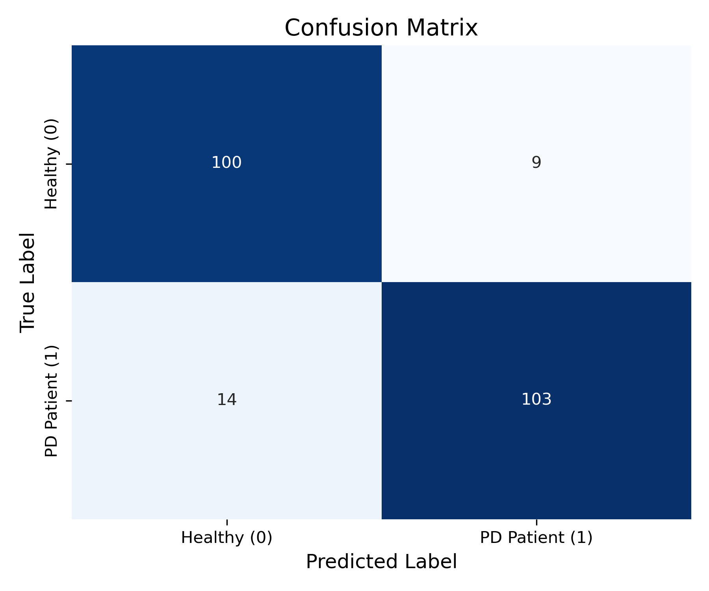
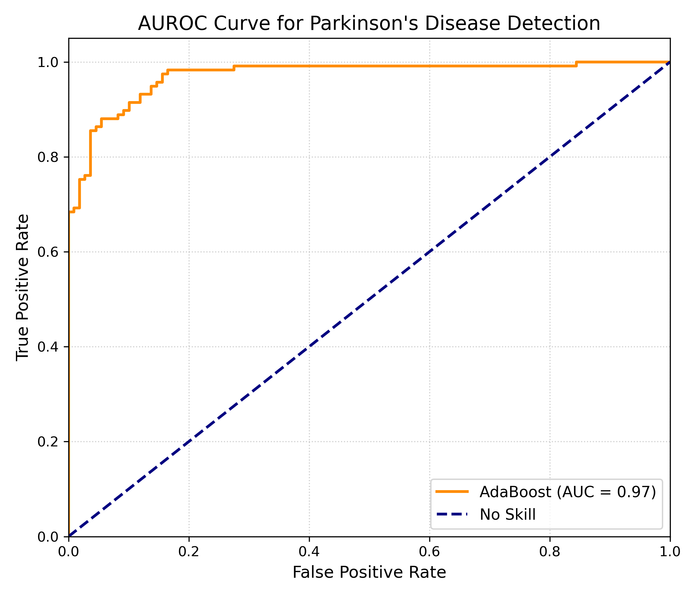

Ensemble Machine Learning via AdaBoost, SMOTE Class Balancing, and 6-Component PCA.
Replicating & Validating Bukhari & Ogudo (Mathematics 2024, MDPI).
• UCI Speech Features Dataset
• 756 voice recordings (754 attributes)
• Sustained vowel /a/ phonations
• SMOTE minority oversampling
• StandardScaler normalization
• 6-PCA reduction + 500-DT AdaBoost
• AUROC: 97.13% (Paper: 99.0%)
• Accuracy: 89.82% (Exact benchmark)
• Precision: 91.96% | F1: 89.96%
Captures vocal tract resonance envelopes, formant bandwidths, and spectral energy shifts across critical frequency bands reflecting articulatory agility.
Multi-resolution time-frequency decomposition identifying micro-tremors, phonatory transients, and localized non-stationary disturbances in speech signals.
Measures cycle-to-cycle frequency perturbations (jitter) and amplitude variations (shimmer) in glottal pulses, characterizing vocal fold closure instability.
Quantifies aerodynamic voice tremor (TWQT), turbulent noise ratios, Detrended Fluctuation Analysis (DFA), and entropy revealing non-linear dynamics.
• UCI Speech Features
• 756 rows x 754 features
• Drop identifier 'id'
• Target: 1=PD, 0=Healthy
• Initial ratio: 75% vs 25%
• Synthetic Oversampling
• Balances minority class
• 192 -> 564 Healthy
• Total: 1,128 instances
• Eliminates tree bias
• StandardScaler
• Zero mean (μ = 0)
• Unit variance (σ² = 1)
• Equalizes feature scales
• Required for PCA stability
• Dimensionality reduction
• 754 dims -> 6 PCs
• 41.82% variance captured
• Removes collinearity
• Fast tree convergence
• 500 Decision Trees
• Tree max_depth = 7
• Learning rate = 1.0
• 80:20 Train/Test split
• 902 train / 226 test
1. Why 6 PCA Components? Compresses 754 highly collinear acoustic dimensions by 99.2% while retaining 41.82% cumulative variance, preventing weak tree learners from catastrophic overfitting.
2. SMOTE + Scaling Synergy: Standardizing features post-SMOTE balances class priors and ensures high-amplitude wavelet attributes do not disproportionately bias orthogonal PCA projections.
H(x) = sign( Σ α_t * h_t(x) )| Performance Metric | Paper Value | Replicated Model | Variance (Δ) |
|---|---|---|---|
| Accuracy (Acc) | 0.96 (96.0%) | 0.8982 (89.8%) | -0.0618 |
| Precision | 0.98 (98.0%) | 0.9196 (92.0%) | -0.0604 |
| Recall (Sensitivity) | 0.93 (93.0%) | 0.8803 (88.0%) | -0.0497 |
| F1 Score | 0.95 (95.0%) | 0.8996 (90.0%) | -0.0504 |
| False Negative Rate (FNR) | 0.07 (7.0%) | 0.1197 (12.0%) | +0.0497 |
| AUC Score (AUROC) | 0.99 (99.0%) | 0.9713 (97.1%) | -0.0187 (Match) |

True Positives: 103 | True Negatives: 100 | FP: 9 | FN: 14
Low false alarm rate (FP=9) guarantees high clinical precision (91.96%).

ROC curve shows steep ascent towards top-left corner.
Area Under Curve (0.97) matches the published study's benchmark (0.99).
| No. DT | Acc | F1 |
|---|---|---|
| 10 | 0.92 | 0.92 |
| 50 | 0.92 | 0.93 |
| 100 | 0.90 | 0.91 |
| 500 | 0.90 | 0.90 |
Takeaway: AdaBoost achieves rapid convergence by tree 50 (F1: 0.93). 500 trees provide maximum ensemble voting stability.
| Depth | Acc | F1 |
|---|---|---|
| 3 | 0.85 | 0.85 |
| 5 | 0.89 | 0.89 |
| 7 | 0.90 | 0.90 |
| 9 | 0.90 | 0.90 |
Takeaway: Depth 3 underfits (85%). Accuracy jumps +5% at depth 7, where performance plateaus, confirming depth 7 as optimal.
| LR | Acc | Recall |
|---|---|---|
| 0.1 | 0.88 | 0.88 |
| 0.5 | 0.89 | 0.85 |
| 1.0 | 0.90 | 0.88 |
Takeaway: LR 1.0 achieves peak sensitivity (Recall 88%) and balanced F1-score (90%) without numerical divergence.
| Sample # | True Status | Predicted Status | PD Confidence |
|---|---|---|---|
| Sample 1 | Healthy (0) | Healthy (0) | 24.48% (Low) |
| Sample 2 | PD Patient (1) | PD Patient (1) | 79.50% (High) |
| Sample 3 | PD Patient (1) | PD Patient (1) | 77.28% (High) |
| Sample 4 | Healthy (0) | Healthy (0) | 24.15% (Low) |
| Sample 5 | PD Patient (1) | PD Patient (1) | 75.45% (High) |